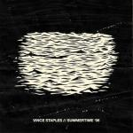
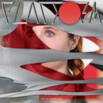
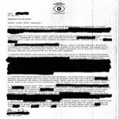

Music Reviews
-
EZTV Calling Out
The Brooklyn trio's debut sounds like a traditional power pop record, delightfully out of time, and never does one track eclipse the other in an effort to keep things uniform and consistent.
Juan Edgardo Rodríguez reviews... -

Vince Staples Summertime '06
The Long Beach rapper's debut finds him developing an outsider resilience in the midst of his troubled adolescence, and dramatizes those disenfranchised days in an episodic rather than thematic way.
Juan Edgardo Rodríguez reviews... -

Muse Drones
On album number seven, Devon rock trio Muse explore themes of dystopia and indoctrination through the medium of guitar riffs. You know, the usual stuff.
Joe Rivers journeys into the unknown... -
Kacey Musgraves Pageant Material
Kacey Musgraves proves once more she's a voice unlike any other in the country music scene. Her second album, Pageant Material, brims over with individuality, even when things get a little repetitive.
Luiza Lodder is hoping for another ''Blowin' Smoke''... -

Holly Herndon Platform
Holly Herndon's music is deeply entrenched in the digital age and provides ample food for thought; it's the product of about two parts electroacoustic improvisation, one part techno floor-fillers.
Stephen Wragg reviews... -

Desaparecidos Payola
Thirteen years after their putting out their highly charged debut, the political punk band lead by Conor Oberst return with tenacious fervor while holding on to a proclamation that can’t be wavered or rewritten.
Juan Edgardo Rodríguez reviews... -
Hudson Mohawke Lantern
The music of Hudson Mohawke traffics in the type of high-volume, low-attention span maximalism that seems engineered to guarantee club hits. Lantern, his second foray into the increasingly outdated format of the LP, should introduce elements that challenge that style.
Brad Hanford reviews... -

Bully Feels Like
Singing and songwriting aren't only cathartic exercises for Bully frontwoman Alicia Bognanno, but an outlet that allows her to air her most candid qualms out to dry. Where some people have a diary, Bognanno has a airtight backdrop of cozy melodies and lemon-fresh fuzz. Dangerously infectious, and a stunning debut LP.
Carl Purvis has a new best mate... -
Florence and the Machine How Big, How Blue, How Beautiful
Florence and the Machine's third album is a look back at a chaotic year, where Florence Welch lost herself, only to return with her best effort yet.
Joe Marvilli listens to Florence in the eye of the storm... -

War Waves War Waves
On their full-length debut, the post-hardcore quartet aren't afraid to let their emotions show.
Joe Rivers reviews...